Activities
This section describes the major activities that affect code reviews, including starting a review, updating a review, and fetching a review's files.
Start a review
To start a code review, choose one of the following approaches:
Important
If your Helix Versioning Engine is configured as a commit-edge deployment, and your normal connection is to an edge server, Swarm refuses to start reviews for shelved changes that have not been promoted to the commit server.
Within Swarm, this means that the Request Review button does not appear for unpromoted shelved changes. Outside of Swarm, attempts to start reviews for unpromoted shelved changelists appear to do nothing. Ask your Helix Versioning Engine administrator for assistance if you cannot start a review.
An administrator of the Helix Versioning Engine can automatically promote
shelved changes to the commit server by setting the configurable
dm.shelve.promote to 1.
-
 When you use Swarm to view a submitted changelist, click the
button to request a review of
that changelist. This uses the
post-commit model.
When you use Swarm to view a submitted changelist, click the
button to request a review of
that changelist. This uses the
post-commit model.
-
When you use Swarm to view a shelved changelist, click the
button to request a review of
that shelved changelist. This uses the
pre-commit model.
-
When you are about to shelve or submit files:
-
Include
#reviewwithin your changelist (separated from other text with whitespace, or on a separate line).Once the review begins, Swarm replaces
#reviewwith#review-12345, where12345is the review's identifier.Note
The
#reviewkeyword is customizable. For details, see Review keyword. -
At this time, you can add reviewers to the code review by using an @mention in the changelist description for each desired reviewer. Including an asterisk (
*) before the userid in an @mention, for example@*userid, adds that user as a required reviewer. -
Complete your shelve or submit operation.
Warning
If you shelve a changelist and subsequently edit the description to include
#review, a review is not started. You must re-shelve the files after adding#review. -
-
When you are using Git Fusion, you can start a review by pushing your changes to a target branch using the following command:
$ git push origintask1:review/master/newtask1is the name of the current Git task branch, andmasteris the target branch that the proposed changes are intended for.Important
The target branch must be mapped to a named Perforce branch in the Git Fusion repo configuration.
See "Setting up Repos" in the Git Fusion Guide for details on converting a lightweight branch into a fully populated Perforce branch.
When the command completes, the output indicates the review id that has been created:
remote: Perforce: Swarm review assigned: review/master/
1234where
1234is the review id that was just created.Tip
For more information on Git Fusion, see the Git Fusion Guide
Update a review
To update a code review, use one of the following approaches:
-
For a pre-commit review that you authored:
-
edit the files
-
shelve the files
You can repeat these steps as many times as necessary.
-
-
For a post-commit review, or a review where you are not the author:
-
fetch the review's files into a new changelist
-
edit the files
-
update the changelist's description to include
#review-12345(separated from other text with whitespace, or on a separate line) -
shelve the changelist's files
Once these steps are complete, further updates involve editing the files, and then shelving the changelist's files.
Warning
If you use an invalid review identifier, it will appear that nothing happens. Swarm is currently unable to notify you of this situation.
-
-
When you are working with Git Fusion:
Important
You can only update Git Fusion-initiated reviews using Git Fusion.
In the following example, the current Git task branch is
task1, the target branch ismaster, the review id is1234, the Git Fusion hostname isgfserver, and the remote repo name isp4gf_repo.-
Fetch the review's head version:
$ git fetch --prune origin From
gfserver:p4gf_repo* [new_branch] review/master/1234-> origin/review/master/1234x [deleted] (none) -> origin/review/dev/newThe
--pruneoption lets the local Git repo delete the unwantedreview/reference created by the initial git push originmaster/newtask1:review/master/new command. -
Check out the review's head version:
$ git checkout review/master/1234 -
Edit the files as required.
-
Add the edited files to the index of files, in preparation for the next commit.
There are several ways to do this. For example, to add all modified files to the index, run:
$ git add -A -
Commit the files in Git:
$ git commit -m "made some changes" -
Push the Git changes to the review:
$ git push origin review/master/1234Note
If you get review feedback that is better expressed as a Git rebase and cleaned up history, you can make your changes and push them as a new review.
You cannot clean up history and then push your changes to the same review.
Tip
For more information on Git Fusion, see the Git Fusion Guide
-
Fetch a review's files
First, determine the changelist containing the review's files:
-
Visit the review's page.
-
The current review version's changelist appears in the file list heading:
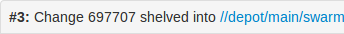
In this example, the changelist is
697707. You use the identified changelist in place of shelved changelist below. -
Decide whether you will use p4, P4V, or Git Fusion to fetch the files, and follow the instructions in the appropriate section below.
Using P4
-
For a shelved changelist, use a command-line shell and type:
$ p4 unshelve -cshelved changelist -
For a committed changelist, use a command-line shell and type:
$ p4 sync @committed changelist
Note
Your client's view mappings need to include the changelist's path.
Using P4V
-
For a shelved changelist:
-
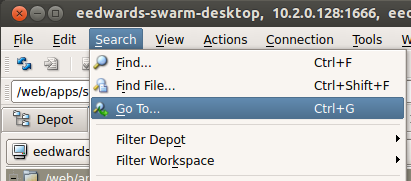 Select .
-
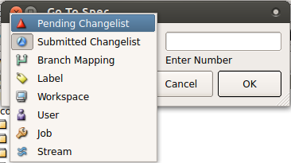 Change the select box to .
-
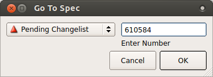 Type in the shelved changelist number and click .
-
 Select the files in the Shelved Files
area.
Select the files in the Shelved Files
area.
-
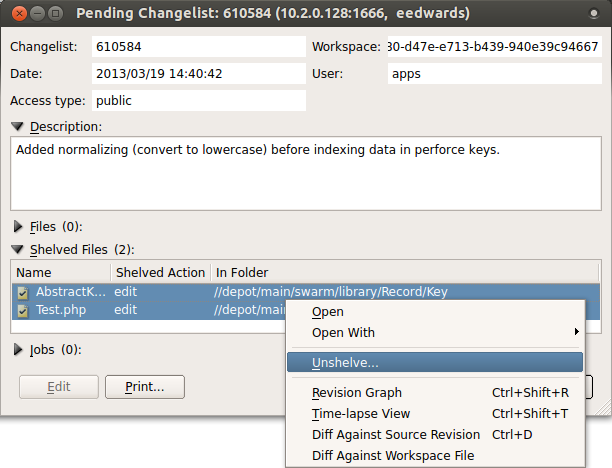 Context-click, and select .
-
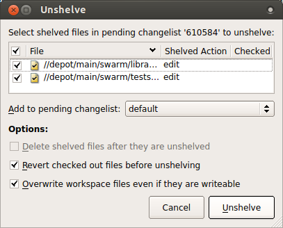 Click .
-
-
For a committed changelist:
-
Select .
-
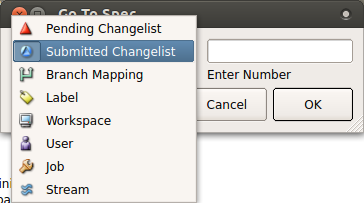 Change the select box to .
-
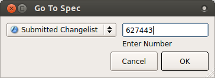 Type in the submitted changelist number and click .
-
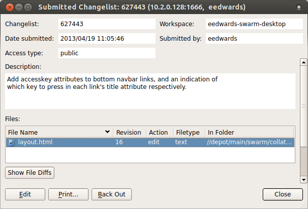 Select the files in the Files area.
-
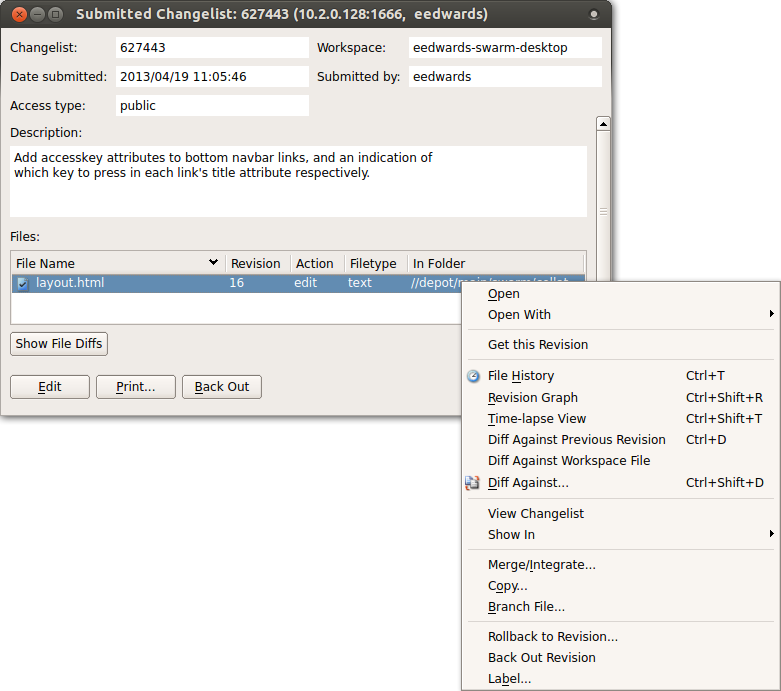 Context-click, and select .
-
Click .
-
Using Git Fusion
In the following example, the current local task branch is
task1, the target branch is
master, the review id is
1234, the Git Fusion hostname is
gfserver, and the remote repo name is
p4gf_repo.
-
Fetch the review's head version:
$ git fetch --prune origin From
gfserver:p4gf_repo* [new_branch] review/master/1234-> origin/review/master/1234x [deleted] (none) -> origin/review/dev/newThe
--pruneoption lets the local Git repo delete the unwantedreview/reference created by the initial git push originmaster/newtask1:review/master/new command. -
Check out the review's head version:
$ git checkout review/master/1234
Important
You can only update Git Fusion-initiated reviews using Git Fusion.
Tip
For more information on Git Fusion, see the Git Fusion Guide
Edit reviewers
A review author, or users with admin or super privileges are always able to edit the reviewers for a review. Reviewers are always able to join or leave reviews, or to change whether their vote is required or optional.
Additionally, the following individuals may edit reviewers:
-
If the review is moderated, the moderators.
-
If the review is part of a project, but not moderated, all project members.
-
If the review is not part of a project, any authenticated user.
To edit reviewers for a review:
-
Navigate to a review.
-
Click the edit reviewers button, which appears just to the left of reviewer avatars:

The Reviewers dialog is displayed:
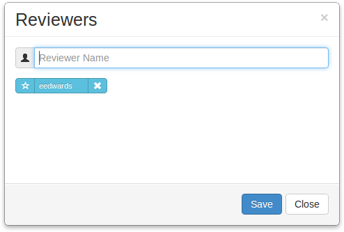
-
Add or remove reviewers, or change the vote requirement.
Use the reviewer search field to find users by name or userid. The field auto-completes as you type.
For existing reviewers, click the star icon to the left of the userid to toggle whether their vote is required or not. A solid star means that their vote is required to approve a review, whereas the outlined star means that their vote is optional.
Click the icon to the right of the userid to remove that reviewer from the review.
-
 Click the button to save any changes made.
Click the button to save any changes made.